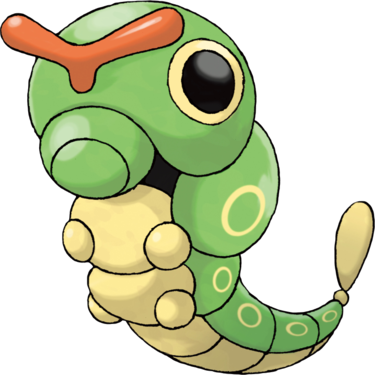

Chenipan est un Pokémon serpentin ressemblant aux larves de Papilio xuthus. Il a le corps d'une chenille verte avec des marques jaunes en forme d'anneaux sur les flancs. Il possède également de grands yeux jaunes aux pupilles noires. Sa caractéristique la plus notable est l'antenne rouge vif sur sa tête en forme de « Y », certainement un osmeterium, qui libère une odeur repoussant les prédateurs. Ses marques en formes d'yeux servent également à effrayer ses ennemis. Ses pattes se terminent par des ventouses, permettant à ce Pokémon d'escalader la plupart des surfaces avec un minimum d'efforts.